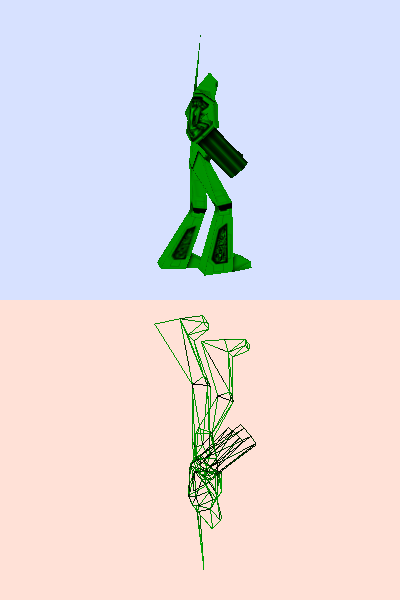

CreateCamera()
Syntax
Result = CreateCamera(#Camera, x, y, Width, Height [, VisibilityMask])Description
Creates a new camera in the current world, at the position x,y with the specified dimensions. Note that these positions and sizes are the position and sizes of the display on the screen, not the position and size of the camera in the world.
Unlike other graphics related functions, these coordinates and dimensions are in percentages, from 0 to 100 (float numbers can be used for more precise placement). This could seems odd, but 3D applications should be resolution independent and this is a good way of achieving that. If a camera is created with a height of 50% then it will always fill 50% of the height of the screen, irrespective of whether you use a screen which is 640*480 or 1600*1200. If a camera has already been created with the same number, the previous camera is automatically freed and replaced by the new one.
Cameras can be overlapped. This means that it is possible to display a camera which fills the whole screen and put a little camera inside which shows another place in the world. To achieve this, the order of creation is very important: the camera which will be on top should be created last.
Parameters
#Camera The number to identify the new camera. #PB_Any can be used to auto-generate this number. x The percentage position across the screen of the left edge of the start of the display for this camera. 0% means at the left of the screen, 100% means at the right of the screen. See the picture below for a better overview. y The percentage position down the screen of the top edge of the start of the display for this camera. 0% means at the top of the screen, 100% means at the bottom of the screen. See the picture below for a better overview. Width The percentage of the width of the screen that the display for this camera should take up. See the picture below for a better overview. Height The percentage of the height of the screen that the display for this camera should take up. See the picture below for a better overview. VisibilityMask (optional) A mask to select which entities and billboards to display on this camera. The camera defines its own mask, and if the entity or billboard mask match, then it will be displayed. By default the entities and billboards have no mask, meaning they will be always displayed on all cameras.
Return value
Returns zero if the camera can't be created. If #PB_Any is used as '#Camera' parameter, the new camera number will be returned as 'Result'.
Remarks
Example: Camera creation position and dimension:
CreateCamera(0, 0, 0, 100, 100) ; Creates a camera which fill the whole screen
CreateCamera(0, 0, 0, 100, 50) ; Creates an horizontal split screen effect, for 2 players
CreateCamera(1, 0, 50, 100, 50) ; mode on the same screen
CreateCamera(0, 0, 0, 100, 100) ; Create a full screen camera
CreateCamera(1, 25, 0, 50, 10) ; And a rearview mirror effect.
; Note the rearview is last so that it is displayed on top of the full screen camera
Example: Two cameras separating screen into two halves:
; upper camera CreateCamera(0, 0, 0, 100, 50) MoveCamera(0, 0, 50, 150, #PB_Absolute) CameraBackColor(0, RGB(215, 225, 255)) ; camera below CreateCamera(1, 0, 50, 100, 50) MoveCamera(1, 0, 50, -150, #PB_Absolute) CameraBackColor(1, RGB(255, 225, 215)) RotateCamera(1, 180, 0, 0)
See Also
FreeCamera()
Supported OS
All